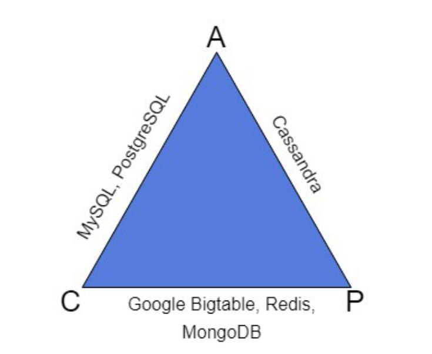

CAP-теорема
Теорема CAP (известная также как теорема Брюера) — говорится, что в распределенной системе возможно выбрать только 2 из 3-х свойств
- Consistency(согласованность данных ) — во всех вычислительных узлах в один момент времени данные не противоречат друг другу;
- Availability (доступность) — Каждый узел (не упавший) всегда успешно выполняет запросы (на чтение и запись).
- Partition tolerance (устойчивость к распределению ) — Даже если между узлами нет связи, они продолжают работать независимо друг от друга
